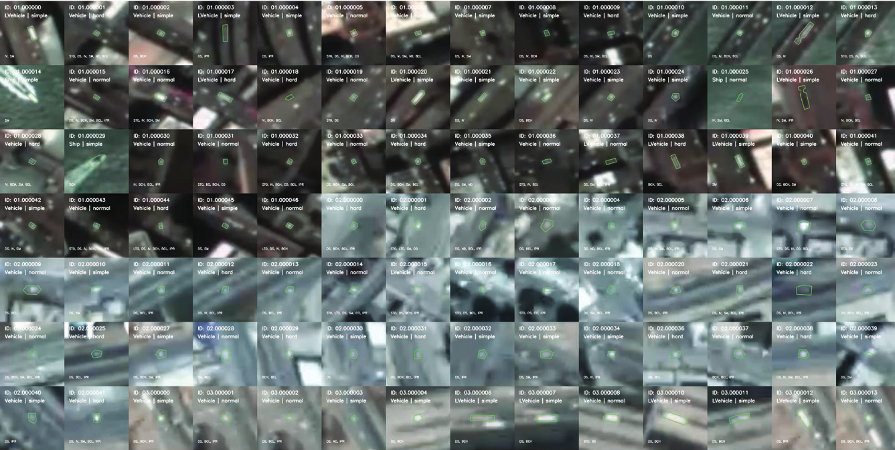
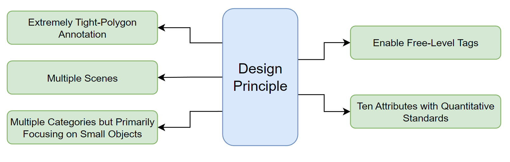

SV248S Dataset:
Single Objection Tracking Dataset
Satellite Videos
该数据集是由吉林一号卫星创建，由分辨率为0.92米的高清全色图构成。 数据集使用长光官方开源的6个视频，每个视频选择约40个目标。 每个视频有500-753帧，持续20-30.12秒，帧速率为25fps，包括四个国家，五个城市，共248个物体。 SV中有船舶、车辆、大型车辆和飞机四类对象，主要关注难以跟踪的小目标（车辆、大型车辆，占物体比例的90%）。 有关该数据集更详细的数据见“Deep Learning-Based Object Tracking in Satellite Videos: A Comprehensive Survey With a New Dataset”。 该数据集由西安电子科技大学IPIU实验室（智能感知与图像理解教育部重点实验室）于2021年7月完成。
Image

Tags Instruction Following:
| Name | Definition | Dependence | AUTO | Basic Properties | Center Point(CP) | It represents the CP of the object bounding box. | BBox | Y |
|---|---|---|---|---|
| Movement Velocity(MV) | It calculates the average velocity considering both the speed value and the direction in adjacent five frames (unit: pps) | CP | Y | |
| Object Size(OS) | The largest value is selected from the height and width of the object bounding box. | BBox | Y | |
| Frame State Flags | Invisible(INV) | The object disappeared without any occluder or is too similar to its surroundings. | M | N |
| Normal Visible(NOR) | The object is visible and found easily. | M | N | |
| Occlusion(OCC) | The object is in the shadow of the building or behind something. | M | N | |
| Sequence Attributes | Background Change(BCH) | The background of the tracked object has noticeable changes in color or texture. | M | N |
| Background Cluster(BCL) | There are at least 10 frames that contain in the INV flag. | INV | Y | |
| Continuous Occlusion(CO) | STO or LTO occur twice or more times in a sequence. | STO, LTO | Y | |
| Dense Similarity(DS) | One or more similar objects exist around the tracked object in the range of 2.5 times OS. | OS | N | |
| In-plane Rotation(IPR) | The object has an in-plane rotation at an angle greater than or equal to 30°. | MV | Y | |
| Illumination Variation(IV) | The object has noticeable changes in brightness or color. | M | N | |
| Short-term Occlusion(STO) | The sequence exists less than or equal to 50 conseccutive frames with OCC flag. | OCC | Y | |
| Long-term Occlusion(LTO) | The sequence exists more than 50 consecutive frames with OCC flag. | OCC | Y | |
| Natural Disturbance(ND) | The object's appearance is influenced by smog or sandy weather or blocked by clouds. | M | N | |
| Slow Motion(SM) | The moving speed of the tracked object is fewer than 2.2pps. | MV | Y |
Design Principle

File Definition:
{
"source_info":{
"video_id": "01", # 源视频的名称
"seq_id": "000002", # 当前目标的名称
"frame_range": [], # 相对于原始视频使用的帧范围
"crop_range": [] # 相对于原始视频的裁剪块的范围
},
"details":{
"init_rect": [], # 初始化边界框
"init_poly": [], # 初始化的紧致多边形
"length": 325, # 序列的总长度
"class_name": "ship", # ship, plane, car, car-large (这些名称与论文中不同)
"level": "simple" # simple, normal, hard
}
}